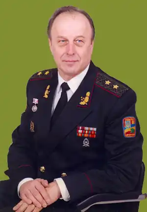

Генерал-лейтенант Пасько Володимир Васильович. Член Національної спілки письменників України.
Народився 10 жовтня 1946 р. на Тернопільщині. Помер 29 серпня 2014 р. у Києві.
В 1965 р. поступив до Військово-медичної академії в Ленінграді, яку закінчив у 1971 р. Проходив службу в Повітрянодесантних військах на посаді начальника медичної служби полку. В 1972-75 рр. навчався в ад'юнктурі ВМедА. В 1975 – 1982 рр. – науковий співробітник і викладач Академії. З травня 1982 р. по лютий 1984 р. – начальник медичної служби 108-ї мотострілецької дивізії, що діяла в центральній частині Афганістану. Брав безпосередню участь в десяти армійського масштабу і багатьох дивізійних бойових операціях. З березня 1984 р. до березня 1992 р. – знову викладач і старший викладач (доцент) Військово-медичної академії в Ленінграді. У вересні 1991 р., у зв'язку із здобуттям Україною незалежності, домігся довгострокового відрядження (листопад – грудень 1991 р.) до Києва і брав активну участь в будівництві Збройних Сил України, працюючи в новоствореному Центральному апараті Міністерства оборони України спочатку як прикомандирований, а потім, з березня 1992 р. – на постійній основі. В 1991-92 рр. розробив розгорнуту концепцію побудови системи військово-медичної освіти і науки в Україні. Значною мірою завдяки зусиллям В.В. Паська і групи його однодумців у 1993 р. був створений вищий військовий спеціальний навчальний заклад нового типу – Військово-медичне відділення при Національному медичному університеті ім. О.О. Богомольця, першим керівником якого він і був призначений. За його безпосередньою участю підготовлено Постанову Кабінету Міністрів України № 820 від 16 жовтня 1995 р. "Про створення Української військово-медичної академії". В.В.Паськові було доручено здійснити реалізацію цієї Постанови – забезпечити практичну реорганізацію існуючих на той час військово-медичних навчально-наукових структур, очолити новостворену Академію та організувати виконання нею завдань, властивих вищій школі. Під його керівництвом Академія здобула найвищий, IV рівень державної акредитації і стала провідним освітньо-науково-інформаційним центром військової медицини в нашій державі, який здійснює підготовку фахівців за рівнем "магістр медицини (фармації)" у режимі резидентури. Очолював УВМА від дня її заснування в січні 1993 р. до серпня 2003 р. (за винятком періоду з грудня 1994 р. по лютий 1996 р.). В серпні 1998 р. В.В. Паську присвоєне військове звання генерал-майор, а в серпні 2001 р. – генерал-лейтенант медичної служби. З лютого 2005 р. по грудень 2006 р. – заступник Міністра оборони України. Був куратором наступних напрямів роботи: кадрова, соціально-гуманітарна й інформаційна політика; військова освіта і наука; охорона здоров'я військовослужбовців; нагляд за охороною праці; фізкультура і спорт. Звільнений з державної служби у грудні 2006 р. по досягненню пенсійного віку за власним бажанням у зв'язку з виходом на пенсію. В подальшому – професор Української військово-медичної академії, головний редактор науково-практичного журналу Міноборони "Військова медицина України". Впродовж всієї своєї діяльності В.В. Пасько активно займався науковою роботою. В 1987 р. захистив кандидатську дисертацію. В лютому 2002 р. рішенням Атестаційної колегії МОН України йому було присвоєне вчене звання професора. У травні 2002 р. захистив в НМУ ім. О.О.Богомольця докторську дисертацію. Автор понад 60 друкованих наукових праць і 15 публікацій громадського і військово-патріотичного спрямування. Ініціатор створення і провідний співавтор перших в Україні сучасних російсько-українських словників військово-медичної термінології, а також Російсько-українсько-англійського алфавітного довідника з військової та екстремальної медицини. Під час служби в Радянській армії В.В. Пасько за успішне керівництво медичною службою в бойових умовах був нагороджений орденом Червоної Зірки і почесним знаком "Відмінник охорони здоров'я СРСР"; за підготовку керівного складу військово-медичної служби іноземних армій – орденом Дружби (Республіки В'єтнам). За службу в Збройних Силах України в удостоєний почесного звання "Заслужений лікар України" (1966); нагороджений відзнакою МО України "Вогнепальна зброя" (2001); відзнакою Президента України "Іменна вогнепальна зброя" (2006). Має також різні відомчі відзнаки і нагороди. Головним захопленням генерала Паська є літературна творчість. В 1999 р. вийшла книга "Ночь забытых песен" (рос. мовою), перевидана в 2001 і 2006 рр.; в 2001 р. – "Час прощення", перевидана в 2005 р.; в 2004 р. – "Пора істини", перевидана в 2005 р.; в 2012 р. – "Звання – слухач. Нотатки лікаря-генерала". – Київ-Львів, 2011. (Рос. мовою – "Звание – слушатель. Записки врача-генерала". – Киев: Изд. "Ярославів Вал". – 2011).